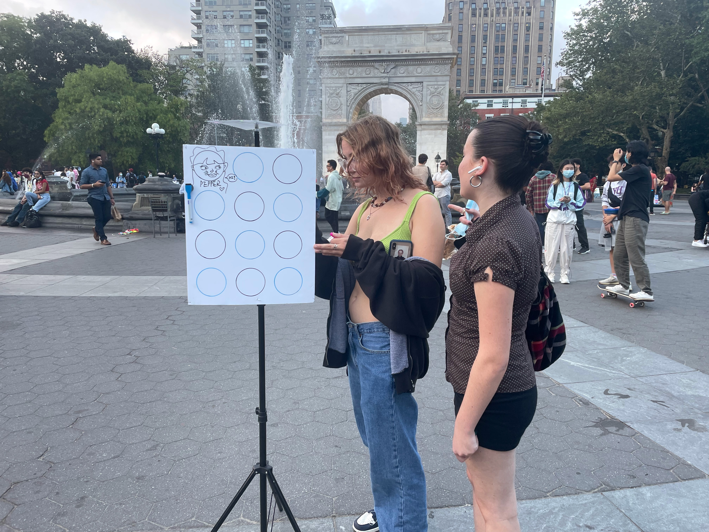
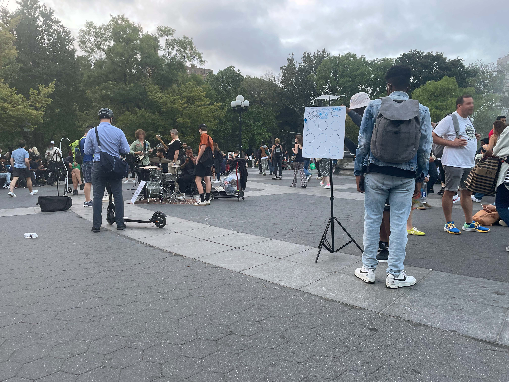

Instruction Sets
for Strangers

Instruction Sets for Strangers: Collective Artwork Creation
2021
Instruction sets for strangers is a project that sought to connect strangers through a shared task, interaction, or other manifestation of curiosity, without any written or verbal instructions from our group. In order to serve our chosen venue and its occupants best, it was necessary to research and understand the space's historical significance, its unique elements, and how people currently interact within it.
This project was created for Major Studio I (Interaction Design) at Parsons during the Fall 2021 semester, under the instruction of Harpreet Sareen. I worked with Pepper Xiao (Parsons MFA DT '23) and Duo Xu (Parsons MFA DT '23) to create a piece for multiple strangers to interact with in Washington Square Park, in New York, NY.
For our project, we wanted to maximize interaction while maintaining simplicity. Since New York is a diverse, international city, we wanted the object to be accessible to a wide audience within the park. We decided to focus on the act of creation, using drawing as a means for the community of the park to create something together.
We constructed a simple structure, which consisted of a three-sided drawing surface mounted on a tripod. Markers were attached to the structures with magnets and coins, and there were several blank circles drawn on the structure prior to exhibition to act as nonverbal guides.
 The above video documents our final installation, Collective Artwork in Washington Square Park. It was taken over a 6-hour period. In it, you can see a large amount of interactions with the piece (we lost count - next time we'll bring a clicker to get an exact number!), groups gathering, folks lining up to leave their mark on the sculpture, and people examining the drawings that had been left by previous visitors. Some examples are shown here (portions are pixelated for decency).
The above video documents our final installation, Collective Artwork in Washington Square Park. It was taken over a 6-hour period. In it, you can see a large amount of interactions with the piece (we lost count - next time we'll bring a clicker to get an exact number!), groups gathering, folks lining up to leave their mark on the sculpture, and people examining the drawings that had been left by previous visitors. Some examples are shown here (portions are pixelated for decency).
Overall, we found a great deal of success in the final installation of our instruction sets for strangers. It achieved several things: it brought strangers together, it instructed people to interact with the installation in a way that created a collective artwork, and it brought joy to a subpopulation of the park.